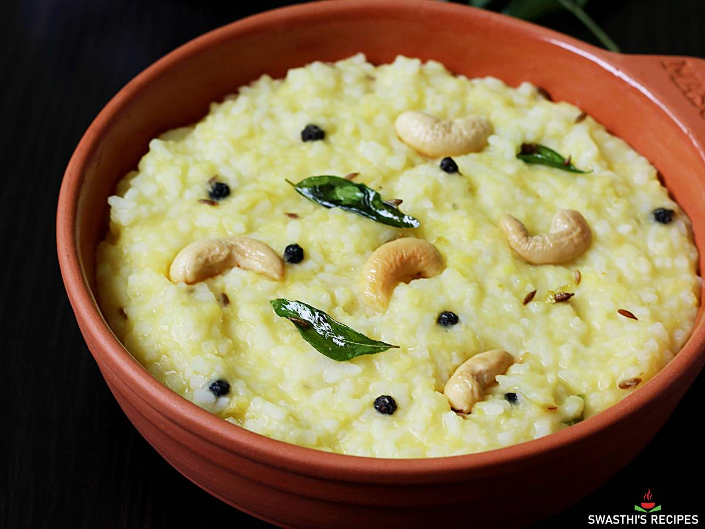

üçö Pongal Recipe

Ingredients
- 1/2 cup rice
- 1/4 cup yellow moong dal
- 1 tsp black pepper (whole or crushed)
- 1 tsp cumin seeds
- 1 inch ginger (finely chopped)
- A few curry leaves
- 2 tbsp ghee
- 10-12 cashews
- Salt to taste
- 4 cups water
Instructions
- Dry roast moong dal till aromatic. Rinse dal and rice well.
- Pressure cook rice and dal together with water and salt for 4-5 whistles.
- Heat ghee in a pan. Fry cashews till golden, then add cumin, pepper, ginger, and curry leaves.
- Pour the tempering over the cooked rice-dal mixture and mix well.
- Serve hot with coconut chutney or sambar.
Serve With
- Coconut chutney
- Sambar
- Pickle
üçõ Tip: Adjust ghee to enhance the flavor and richness of Pongal.